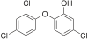

triclosan

Has synonym(s): tcs
Definition: Triclosan (sometimes abbreviated as TCS) is an antibacterial and antifungal agent present in some consumer products, including toothpaste, soaps, detergents, toys, and surgical cleaning treatments. It is similar in its uses and mechanism of action to triclocarban. Its efficacy as an antimicrobial agent, the risk of antimicrobial resistance, and its possible role in disrupted hormonal development remains controversial. Additional research seeks to understand its potential effects on organisms and environmental health.
Source: Wikipedia
Wikipedia Page (Something wrong with this association? Let us know.)
Wikidata Page (Something wrong with this association? Let us know.)